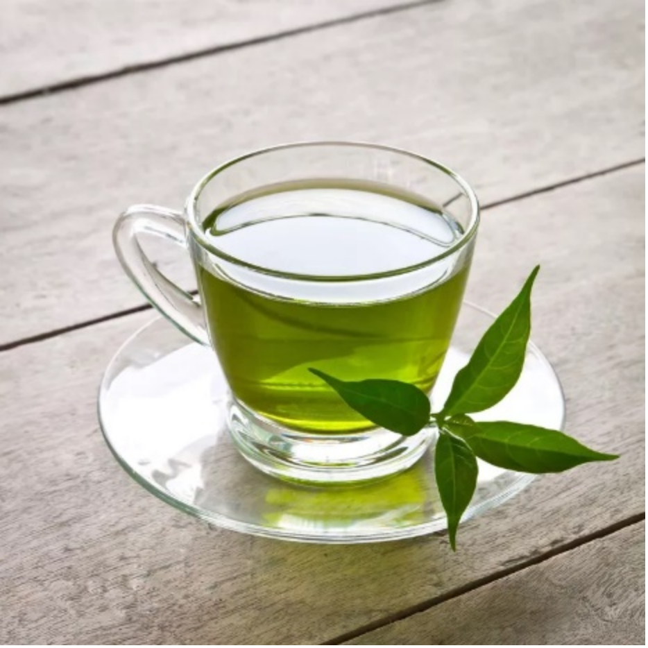

Prevention for the COVID-19 virus may have been hidden in your daily lives
COVID-19
Figure 1 Image by Joel Achenbach, Ariana Eunjung Cha and Frances Stead Sellers from The Washington Post(https://www.washingtonpost.com/health/2021/03/09/coronavirus-spread-world/)
The Severe acute respiratory syndrome coronavirus 2 (SARS-CoV-2) that has swept the world since 2019 has caused human beings to live in fear of being infected anytime. While the term Covid-19 appears repeatedly, have you ever thought about a question:
What exactly is "Covid-19"?
Before delving into this issue, we need to know that the current COVID-19 pandemic was caused by the severe acute respiratory syndrome coronavirus 2 (SARS-CoV-2). SARS-CoV-2 is a virus under influenza and respiratory viral diseases category[1].
How did it infect patients step by step and make them suffer for weeks?
First, it affects an infected person's respiratory system, causing mucous membranes to inflammation. This can damage the patient's alveoli (balloon-shaped air sacs function for respiratory) and lead to pneumonia (Lungs infection)[1][2].
You thought the virus had just stopped traveling through your body? The answer is no.
After infecting the respiratory system, the COVID-19 virus will turn into a master key, and as long as your body part or cell has a receptor for the master key, the virus can infect the cell. That's not over yet; since we're talking about the respiratory tract, COVID-19 may be transmitted to new hosts through the oral cavity. Therefore, COVID-19 is extremely contagious. In some cities, there were only one or two infected people a few days ago. If isolation is not implemented, hospitals will soon be full. However, treating Covid-19 requires a lot of economic resources for ordinary people, and the hospital does not necessarily have a bed for you.

Figure 2 Image by Phethay Canthra Phun from Getty Images ((https://i.guim.co.uk/img/media/3d0381b855a4da6f0d7432d613dbce7a783faaaa/0_415_2048_1229/master/2048.jpg?width=620&dpr=1&s=none))
But have you ever thought something hidden in your daily lives could prevent the infection of Covid-19 and ease the pain caused by the virus?
Yes, and green tea is one of them. The reason for choosing green tea is simple. First, it has natural antiviral properties (will be explained later) like some other herbs[2]. Second, green tea has a good taste and is easy to obtain, making it suitable for daily drinking. According to the data collected by World Green Tea Association, green tea occupies nearly a quarter of the world’s total tea production[3]. Maybe you don't know what kind of tea you have drunk or often drink, but green tea is undoubtedly one of them.
Inactivate the COVID-19?
Imagine that there are four herbal medicines in front of you: Chokeberry, Elderberry, Pomegranate and Green tea. Which natural product should you use?
The effects of these herbal medicines are unknown until the results of the experiments are analyzed. Shennong in China discovered the Curative Virtues of Plants by tasting, but we are not Shennong. That's why we need laboratory data to judge the effect of each drug.

Figure 3 Image by Eggers M, Jungke P, Wolkinger V, Bauer R, Kessler U, Frank B from Antiviral activity of plant juices and green tea against SARS-CoV-2 and influenza virus (http://doi.org/10/1002/per.7431)
Fortunately, an article by Eggers et al. (2022) solves this problem for us[1]. After cultivating the samples of the virus experimental strains, the researchers made statistics on the degree of inactivation of the SARS-CoV-2 virus (Figure 3). The virucidal potential of each herbal drug for different viruses is different, and the data on the degree of inactivation will be an essential indicator for us to inhibit the virus selectively.
To get the virucidal activity of each herbal substance, the experimenters did a quantitative suspension test[1]. In short, the names of the herb medicines are presented at the bottom of Figure 3 (Buffer indicate the antiviral activity of the original virus, act as the role of a control group), and the Y-axis is the tier of infection of the viruses against herb medicine. The green and yellow bars are the percentages of SARS-CoV-2 titer, reduced by herb substances after 1 minute and 5 minutes[1].
Now let's focus on the two columns of Green Tea. Unlike Elderberry, green tea is generally conclusive and effective in inactivating SARS-CoV-2, though not as effective as chokeberry. An 80% reduction of SARS-CoV-2 titer was achieved in just one minute, and there was no significant effect fading after five minutes[1].
Green tea is known to improve brain function, increase fat burning, prevent cancer, and cure HIV, in addition to its latest anti-COVID-19 benefits[4]. Green tea’s resistance to SARS-CoV-2 gives us another reason to drink it. After all, who doesn't love a cheap yet powerful non-drug drink?
Inactivate COVID-19, How？
Figure 4 Image from jilllawrencehealth.com (https://jilllawrencehealth.com/wp-content/uploads/2020/12/WTN191015_ILLUSTRATION-EGCG-over-Tea-Leaf-cropped-slideshow-e1608158007184.png)
You may wonder, what magical power does green tea have to weaken the COVID-19 virus?
A substance called epigallocatechin-3-gallate (EGCG) found in green tea is what makes green tea so magical. EGCG is a type of plant compound called catechin. Catechins are a class of polyphenols that act as antioxidants, preventing disease[5]. Some tea types like white, oolong, and black teas are all low in EGCG, none of them match the levels found in green tea.
If we want to suppress a virus, we need to find out the active binding site of the virus. Chymotrypsin-like protease (3CLpro), as the main protease of SARS-CoV-2, is responsible for the proteolytic function (digestions of protein) of the virus in the mature stage[1]. And the non-structural proteins generated by 3CLpro cleavage, are crucial components of the viral replication complex[1]. These proteins are involved in various steps of viral RNA synthesis and processing, making them attractive targets for antiviral drugs[6].
Tahir ul Qamar et al. (2020) found the SARS-CoV, a virus with high genome similarity to SARS-CoV-2[8]. In another study by Thi Thanh Hanh et al. (2012), showed that EGCG exhibited 85% inhibition of 3CLpro (of SARS-CoV)，which was close to complete[6]. Since the structures of 2 viruses are highly similar, it indicates that the validity of the results of the earlier research on 3CLpro can be extended to COVID-19[7].

Figure 5 Image from ANADOLU AGENCY (https://www.aa.com.tr/en/americas/brazil-finds-new-virus-variant-combining-18-mutations/2201998)
Do medicines exist to treat COVID-19? The answer is yes, but they are scarce and expensive.
The two drugs with the most potential to fight against COVID-19 are remdesivir and chloroquine. They can suppress viral activity, but to what extent? Khan et al. (2021) compared various plant ingredients with antiviral activity with these two antiviral drugs, and the results were unexpected[2]. The study aimed to identify phytoconstituents (bioactive or active chemical compounds responsible for protecting the plant against infections, infestations, or predation[9]) with strong binding affinity to the viral proteins, indicating their potential antiviral activity[2].
Among these phytoconstituents, EGCG exhibited very high binding affinity and a low inhibition constant, particularly with the protein 6vw1, which is an important target of SARS-CoV-2. EGCG even showed better binding with the viral proteins compared to the reference drugs, remdesivir and chloroquine. This suggests that EGCG has the potential to exhibit stronger antiviral activity against COVID-19[2].
EGCG is observed to exhibit better antiviral activity than the two antiviral drugs. You can get better results without spending money, and such treatment options do not have the common side effects of drugs such as headaches. Green tea with EGCG is the undisputed choice for suppressing COVID-19.
Drinking, or others?

Figure 6 Image from Stockholm to introduce gargle test for Covid (https://www.themayor.eu/en/a/view/stockholm-to-introduce-gargle-test-for-covid-9203)
Vaccination is undoubtedly a recommended flu prevention measure today. But the vaccine's effectiveness against COVID-19 is limited in time. I believe you also often hear the term "mutated strain" or “COVID Variants” in news reports. Yes, the virus will mutate and develop drug resistance. Therefore, in addition to vaccines, we should also focus on public health to prevent and control the virus to the greatest extent. Gargling with tea products is a good choice.
Rinse your mouth with green tea, "Rinse?", yes.
Traditionally, tea is for drinking. But the flu virus is easily spread from person to person. If tea can prevent COVID-19, why can't we add tea ingredients (EGCG) to things that go into our mouths, such as mouthwash? According to a study by Ide et al. (2014), gargling with tea and its components effectively reduced the risk of contracting the flu compared to control participants who did not use EGCG-containing buffer or did not gargle with tea[10]. Also, ageing from children to the elderly, the experiment showed that gargling with tea can reduce the risk of infection[10][11].
About future
Although the popularity of people drinking tea is already very impressive today, if you want to prevent COVID-19, it is still not enough.
Gargle is an efficient preventive technique. It is convenient in various situations, such as trains, schools, roads, and hospitals. People only need to find a place to open the cap of it and gargle for about one minute then spit it to suppress the COVID-19 virus[1].
In addition, in some public areas, we often see epidemic prevention tools such as ethanol and disinfectants or prevention and control facilities for epidemic staff. This has produced a considerable change and impact on people's daily life. Therefore, in addition to these blocking facilities, the use of tea-like health food with the ability to inhibit the COVID-19 virus is an option worthy of attention. Because tea drinks can significantly reduce the spread of respiratory viruses, relieve symptoms of infection, or prevent influenza[1].
Q/A section:
1. Effective concentration of EGCG in green tea (do I need strong tea to gargle?); How long can EGCG last in the mouth? Do I need to re-gargle multiple times a day? Besides, gargling is not as easy to apply as face masks. If masks are enough, why would I take off my mask to gargle frequently to maintain the effect?
In the Ref. 10 study, the researchers were using bottled green tea (500 mL) containing a catechin concentration of 37±0.2 mg/dL, including approximately 18% EGCG. Three times a day at least and last for 90 days.
During the virus prevention period, wearing a mask is very important. This article is intended to provide an alternative means of virus prevention. Doing it with a mask will reduce the chance of infection to a greater extent.
Water is necessary for human beings and tea is one of them, I believe that since humans definitely need to drink water, adding some green tea bags will not increase the chance of infection without changing the frequency of drinking water.
2. In vivo experiments: Is gargling the only effective way? What about drinking? Can EGCG be effective inside our bodies?
Killing viruses in the mouth is effective for preventing cross-infection, but it is not enough for people who are already infected and desire a cure. Therefore, green tea sounds more like a "prevention" instead of a "treatment" (as used in the title)
Drinking is a method that commonly used in daily life. In my article, I was suggesting a new component that could be added to the mouthwash. So that it has a new function. EGCG can’t deal with infected patients.
References
[1]Eggers M, Jungke P, Wolkinger V, Bauer R, Kessler U, Frank B. Antiviral activity of plant juices and green tea against SARS-CoV-2 and influenza virus. Phytotherapy Research. 2022; 36 (5):2109–2115. https://doi.org/10.1002/ptr.7431
[2]Mhatre S, Srivastava T, Naik S, Patravale V. Antiviral activity of green tea and black tea polyphenols in prophylaxis and treatment of COVID-19: A review. Phytomedicine. 2021; 96:1-8. https://doi.org/10.1016/j.phymed.2020.153286
[3]Yasukazu K. Green tea production in the World. O-CHANET. [accessed 2022 Nov 19]. https://www.ocha.net/english/teacha/distribution/greentea1.html#:~:text=Among%20them%2C%2070%25%20are%20the,%2C%20and%20Russia%2D2%2C000%20tons.
[4]Liu S, Lu H, Qian Zhao, He Y, Niu J, Asim K, Wu S, Jiang S. Theaflavin derivatives in black tea and catechin derivatives in green tea inhibit HIV-1 entry by targeting gp41. Biochimica et Biophysica Acta (BBA) - General Subjects. 2005; 1723(1-3):270-281. https://doi.org/10.1016/j.bbagen.2005.02.012
[5]Kim, H. S., Quon, M. J., & Kim, J. A. (2014). New insights into the mechanisms of polyphenols beyond antioxidant properties; lessons from the green tea polyphenol, epigallocatechin 3-gallate. Redox biology, 2, 187–195. https://doi.org/10.1016/j.redox.2013.12.022
[6]Nguyen, T. T. H., Woo, H. J., Kang, H. K., Nguyen, V. D., Kim, Y. M., Kim, D. W., ... & Kim, D. (2012). Flavonoid-mediated inhibition of SARS coronavirus 3C-like protease expressed in Pichia pastoris. Biotechnology letters, 34, 831-838.
[7]Qamar M, Alqahtani S, Alamri M, Chen L. Structural basis of SARS-CoV-2 3CLpro and anti-COVID-19 drug discovery from medicinal PLANTS. Preprints. 2020; 10(4):313-319 https://doi.org/10.1016/j.jpha.2020.03.009
[8]Lu, R., Zhao, X., Li, J., Niu, P., Yang, B., Wu, H., ... & Tan, W. (2020). Genomic characterisation and epidemiology of 2019 novel coronavirus: implications for virus origins and receptor binding. The lancet, 395(10224), 565-574.
[9]Alamgir, A. N. M. (2018). Phytoconstituents—Active and inert constituents, metabolic pathways, chemistry and application of phytoconstituents, primary metabolic products, and bioactive compounds of primary metabolic origin. In Progress in drug research (pp. 25–164). https://doi.org/10.1007/978-3-319-92387-1_2
[10]Ide, K., Yamada, H., Matsushita, K., Ito, M., Nojiri, K., Toyoizumi, K., Matsumoto, K., & Sameshima, Y. (2014). Effects of green tea gargling on the prevention of influenza infection in high school students: a randomized controlled study. PLOS ONE, 9(5), e96373. https://doi.org/10.1371/journal.pone.0096373
[11]Yamada, H., Takuma, N., Daimon, T., & Hara, Y. (2006). Gargling with Tea Catechin Extracts for the Prevention of Influenza Infection in Elderly Nursing Home Residents: A Prospective Clinical Study. Journal of Alternative and Complementary Medicine, 12(7), 669–672. https://doi.org/10.1089/acm.2006.12.669